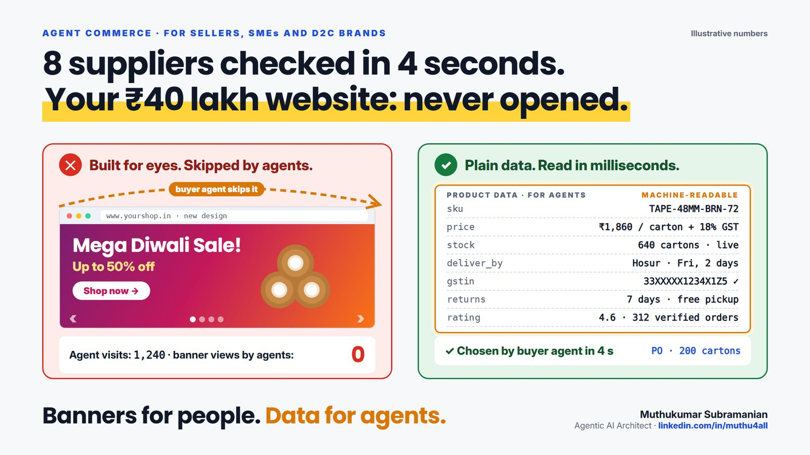

Your Next Customer Won't See Your Website. Their AI Agent Will Decide in 4 Seconds.
By Muthukumar Subramanian · Agentic AI Architect

Picture a Thursday afternoon, a couple of years from now.
Arjun runs purchasing for an auto-parts maker in Hosur. Dispatch is short of packing tape again. He doesn't open a browser. He types one line to his company's buying agent:
"Reorder 200 cartons of 48 mm brown tape. Best landed price. Delivered by Friday."
The agent checks eight suppliers. Two are out of stock. Three can't promise Friday. One is ₹400 a carton dearer than the rest. One keeps its return terms in a PDF the agent can't rely on. Four seconds later, the order goes to the last one standing.
One of the suppliers that lost had just spent ₹40 lakh on a new website. Festive banner, product videos, a carousel of happy customers. The agent never opened it.
(Arjun, the suppliers and every number here are illustrative. The direction isn't.)
The visitor we never designed for
Last Tuesday I wrote about an AI agent that redesigned a checkout page at 2 AM. This is the twist I've been chewing on since: what if the visitor doesn't need the page at all?
For about 25 years we've designed websites for human eyes. Hero images. "Mega Sale" banners. Trust badges. The exact shade of the Buy button. All of it assumes someone is looking.
The next buyer may not look. It reads.
So here's my contrarian line: your next website redesign may be for the wrong visitor.
Two things will be true at once. Websites will get better at adapting to each person. And for a growing share of purchases, especially the repeat, boring, spec-driven ones, the website will matter less, because the "visitor" is a customer's AI agent reading a feed or calling an API.
This isn't a forecast. The plumbing is going in.
→ In April 2025, Mastercard announced Agent Pay and Visa announced Intelligent Commerce. Both are about letting AI agents pay on a person's behalf, within limits that person sets.
→ In September 2025, Google announced AP2, the Agent Payments Protocol, with more than 60 partners.
→ The same month, OpenAI and Stripe released the Agentic Commerce Protocol and launched Instant Checkout in ChatGPT. To take part, a merchant shares a product feed. Not a banner. A feed.
How two agents agree a deal is tomorrow morning's topic. Today I care about something more basic: when a buyer's agent comes looking, what does it actually see of you?
What the agent reads
Not your banner. It reads seven things, in milliseconds:
→ 1. Live price, with GST shown separately, so it can compare landed cost.
→ 2. Live stock, not an "in stock" line that was true last month.
→ 3. A delivery promise to a pincode, by a date.
→ 4. Return terms it can parse: window, conditions, who pays for pickup.
→ 5. GSTIN and HSN, so the buyer's finance team can claim input tax credit without a chase.
→ 6. Trust with a source: verified ratings, order history, a known business identity.
→ 7. A way to order that doesn't need a human clicking through five screens.
None of this is new. Schema.org has had Product and Offer markup for years: price, currency, availability, shipping details, even a merchant return policy. Most small Indian sellers I talk to have never filled any of it in. Their price lives in a WhatsApp message, their stock lives in the owner's head, and their return policy is "call me, we'll manage".
That worked when the buyer was a person. It fails when the buyer is a program.
So SEO quietly turns into something else: being readable by agents. I call it agent-readiness.
👉 [IMAGE: C-agent-customers-2-in-article-two-front-doors.png]
Caption: One catalogue, two front doors. Most sellers built the one for people and forgot the one for agents. Times illustrative.
India already has commerce by protocol
This is where I think India has a head start. ONDC, the Open Network for Digital Commerce, a DPIIT initiative, already works on this idea. A seller lists once through a seller app, and buyer apps across the network can discover that catalogue over a shared open protocol (it's built on Beckn). Commerce by protocol, not by website.
I wrote about the seller side of this in "Every Kirana Store Could Have an AI Agent. ONDC Is the Missing Plumbing." This piece is the buyer side of the same story. When buyers start sending agents instead of opening apps, a seller with a clean, ONDC-ready catalogue is already in the conversation. A seller with only a beautiful website isn't.
👉 [GIF: C-agent-customers-4-in-article-four-seconds.gif]
Caption: Eight suppliers, four seconds. Each one drops out on a field, not a feeling, while a person is still on page one. Illustrative.
What's at stake
→ Margins. An agent compares eight prices every single time. The "they won't bother checking" premium disappears.
→ Loyalty. Brand recall doesn't move an agent much. Fill rate, on-time delivery and clean returns do. Loyalty shifts from feelings to track record.
→ Responsibility. The agent orders 2,000 cartons instead of 200. Whose mistake is that? The buyer who wrote a vague instruction, the company that built the agent, or the seller who accepted a strange order without a second look?
→ Fraud. A fake "buyer agent" places 50 cash-on-delivery orders from a brand-new account. This is partly why the card networks want agents identified and verified before they can pay. Sellers will need the same habit: know which agent you're dealing with, and who stands behind it.
The hard parts (where I could be wrong)
→ People still buy with their eyes. Nobody's agent is choosing a Kanchipuram silk saree for a wedding. Jewellery, furniture, gifts, anything emotional: people will look, touch and compare. For these, the website and the shop still matter a lot.
→ The standards are still settling. ACP, AP2, the card-network programmes, ONDC: they overlap, and nobody knows which mix wins. Building for all of them is a lot to ask of a 20-person business.
→ Agents can be gamed. If agents rank on fields, some sellers will fake the fields: phantom stock, hopeful delivery dates. Trust signals with a verifiable source become the new battleground.
→ Buyers may not trust their own agents with real money for a while. I expect a long "agent suggests, human taps Approve" phase before full autopilot.
The opportunity: agent-ready catalogues
If I were starting a services business for Indian SMEs tomorrow, it would be this: an agent-ready catalogue service.
→ Clean the product data: names, specs, HSN codes, units, pack sizes.
→ Connect live stock and price from whatever billing software or ERP runs the business.
→ Write delivery, return and warranty terms as fields, not paragraphs.
→ Publish it where agents look: schema.org markup, product feeds, an order API, an ONDC seller app.
→ Watch what agents ask for and where you lose, the way we once watched web analytics.
👉 [IMAGE: C-agent-customers-3-in-article-agent-readiness.png]
Caption: The agent-readiness checklist. Seven fields a buyer's agent reads, and what most SMEs show today. Screenshot it before your next website budget meeting.
Someone has to do this work inside the seller's business. That's a job for the forward deployed engineer (FDE), an engineer who sits with the customer's team instead of at the vendor's desk. Some teams call a version of it a Context Engineer: the person who writes the catalogue for agents rather than for people. The titles are still settling. The work is real: turning "call me, we'll manage" into fields a machine can trust.
Web agencies should pay attention too. The ₹40 lakh redesign budget doesn't vanish. Part of it moves from the banner to the data.
Banners for people. Data for agents.
Your turn 👇
If you had ₹40 lakh for your online presence next year, where would it go: website or catalogue?
Tag the person who signed off your last website redesign.
Tomorrow morning: your AI agent agreed a price with a supplier's agent. Is that a contract?